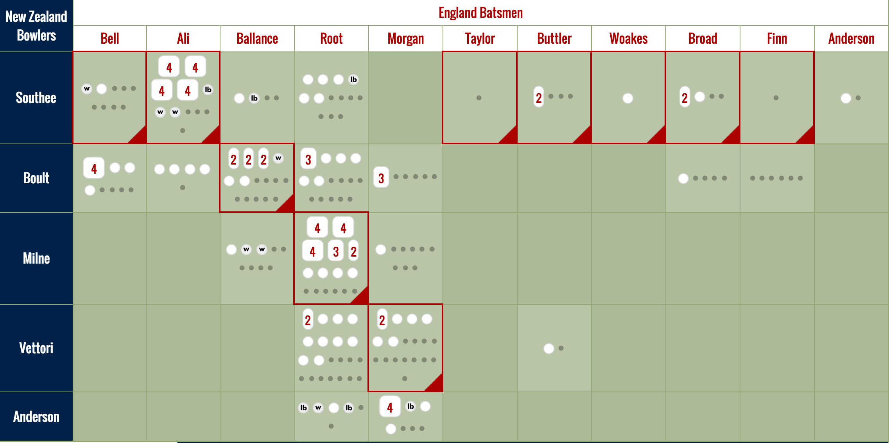
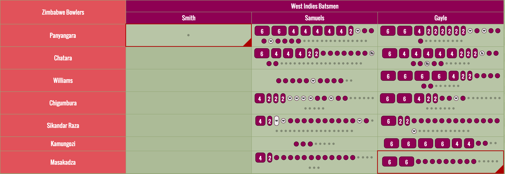

| Match | Date | Venue |
|---|---|---|
| New Zealand v Australia | 29 March |
FINAL
Melbourne Cricket Ground
|
| Australia v India | 26 March |
Semifinal
Sydney Cricket Ground
|
| South Africa v New Zealand | 24 March |
Semifinal
Eden Park, Auckland
|
| New Zealand v West Indies | 21 March |
Quarterfinal
Westpac Stadium, Wellington
|
| Pakistan v Australia | 20 March |
Quarterfinal
Adelaide Oval
|
| India v Bangladesh | 19 March |
Quarterfinal
Melbourne Cricket Ground
|
| Sri Lanka v South Africa | 18 March |
Quarterfinal
Sydney Cricket Ground
|
| Ireland v Pakistan | 15 March | Adelaide Oval |
| United Arab Emirates v West Indies | 15 March | McLean Park, Napier |
| Scotland v Australia | 14 March | Bellerive Oval, Hobart |
| Zimbabwe v India | 14 March | Eden Park, Auckland |
| Afghanistan v England | 13 March | Sydney Cricket Ground |
| Bangladesh v New Zealand | 13 March | Seddon Park, Hamilton |
| South Africa v United Arab Emirates | 12 March | Westpac Stadium, Wellington |
| Sri Lanka v Scotland | 11 March | Bellerive Oval, Hobart |
| Ireland v India | 10 March | Seddon Park, Hamilton |
| Bangladesh v England | 9 March | Adelaide Oval |
| Australia v Sri Lanka | 8 March | Sydney Cricket Ground |
| Afghanistan v New Zealand | 8 March | McLean Park, Napier |
| Ireland v Zimbabwe | 7 March | Bellerive Oval, Hobart |
| Pakistan v South Africa | 7 March | Eden Park, Auckland |
| West Indies v India | 6 March | Western Australia Cricket Association Ground, Perth |
| Scotland v Bangladesh | 5 March | Saxton Oval, Nelson |
| Australia v Afghanistan | 4 March | Western Australia Cricket Association Ground, Perth |
| Pakistan v United Arab Emirates | 4 March | McLean Park, Napier |
| South Africa v Ireland | 3 March | Manuka Oval, Canberra |
| Pakistan v Zimbabwe | 1 March | Brisbane Cricket Ground, Woolloongabba, Brisbane |
| England v Sri Lanka | 1 March | Westpac Stadium, Wellington |
| United Arab Emirates v India | 28 February | Western Australia Cricket Association Ground, Perth |
| Australia v New Zealand | 28 February | Eden Park, Auckland |
| South Africa v West Indies | 27 February | Sydney Cricket Ground |
| Sri Lanka v Bangladesh | 26 February | Melbourne Cricket Ground |
| Scotland v Afghanistan | 26 February | University Oval, Dunedin |
| United Arab Emirates v Ireland | 25 February | Brisbane Cricket Ground, Woolloongabba, Brisbane |
| West Indies v Zimbabwe | 24 February | Manuka Oval, Canberra |
| England v Scotland | 23 February | Hagley Oval, Christchurch |
| India v South Africa | 22 February | Melbourne Cricket Ground |
| Afghanistan v Sri Lanka | 22 February | University Oval, Dunedin |
| Australia v Bangladesh | 21 February | Brisbane Cricket Ground, Woolloongabba, Brisbane |
| West Indies v Pakistan | 21 February | Hagley Oval, Christchurch |
| England v New Zealand | 20 February | Westpac Stadium, Wellington |
| United Arab Emirates v Zimbabwe | 19 February | Saxton Oval, Nelson |
| Bangladesh v Afghanistan | 18 February | Manuka Oval, Canberra |
| Scotland v New Zealand | 17 February | University Oval, Dunedin |
| West Indies v Ireland | 16 February | Saxton Oval, Nelson |
| India v Pakistan | 15 February | Adelaide Oval |
| South Africa v Zimbabwe | 15 February | Seddon Park, Hamilton |
| Australia v England | 14 February | Melbourne Cricket Ground |
| New Zealand v Sri Lanka | 14 February | Hagley Oval, Christchurch |
I recently discovered the game of cricket after moving to New Zealand (Go Blackcaps!), and set about exploring the game through a process of creating my own visualizations of the results of cricket matches. Consider these designs meditations on my new favorite sport.
Note: This is a work in progress, built for my own entertainment and education. I am only posting it online because a couple of fellow cricket enthusiasts I've shown it to have asked me to share it. It's buggy in spots, sometimes gets totals wrong, and has only ever been viewed up to this point by me in Google Chrome on a MacBook retina display. It may look quite crap on anything else. You've been warned.
The main chart I've been working on is a modified "Manhattan" graph, in that it's essentially a series of bars whose heights show the number of runs in each over. However, I've broken down each bar to show a distinct mark for each ball bowled. Dot balls (deliveries for no runs) display as, well, a dot. A single run is a circle the height of two dots. Balls for more than one run display as an oblong shape proportionally as high as the number of runs (3 runs are the height of 3 balls, 4 run 4 balls high, etc), accounting for a small amount of padding between each mark. The tiny padding makes a huge visual difference, allowing each mark to read as distinct, even at the end of a long game.
Cricket is all about the steady accumulation of runs, and I've tried to stay true to that by showing an individual mark for every ball in play, but still letting the overall shape of the game be read at a glance.
New Zealand's lopsided defeat of England
I've used the colours of each team to display batted runs. Extras that occur due to bowling faults (leg balls, wides, no balls, etc) are displayed in white, making them stand out at different visual value and making matches with wild bowling performances immediately stand out.
Wickets are in stop-sign red. I originally had wickets in full-height circles, same as a single run (the banner at the top of this page still shows the old design). I thought it looked awesome, but it bugged me that the vertical scale was off—an over with a hat-trick and three dot balls would have been the same height as a 3-run over—so now wickets have less visual prominence but the proper height for zero runs.
Behind the bars, I'm showing the current run rate as a yellow line. In the second innings, the first team's target rate shows as well. I've got some ideas about how to show the required run rate, so watch this space.
Using a bit of scripting, information about each ball call be viewed by pointing at it. we can highlight individual performances. This view immediately calls out an individual contribution, such as Chris Gayle's recent 216 run outing against Zimbabwe. On the Match pages, use the "Batting" and "Bowling" tabs on the right to select a player.
Chris Gayle's mammoth double century v. Zimbabwe
Below the overs chart, I've added a Head To Head chart, which shows the accumulation of runs between a given bowler and batsman. Bold red frames show wickets. Once again, every ball delivered makes a mark, and the size of the marks is proportional to the number of runs scored.
Tim Southee's 7-wicket evisceration of England's batters
Gayle & Samuels' ridiculous 372-run partnership
I still have a long way to go, and there are many improvements I can make. Here are a few things I'd love to add:
Would love to hear what folks think about these. I'm @mlascarides on Twitter. Give a shout!
New Zealand Herald, 23 March: Visualising Martin Guptill's record-breaking World Cup innings